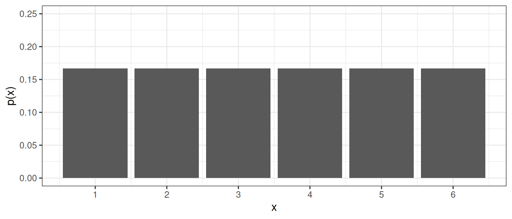
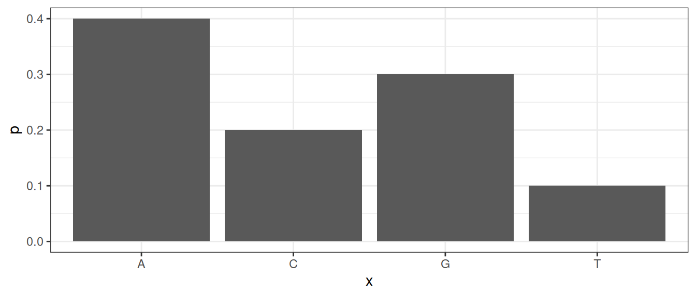
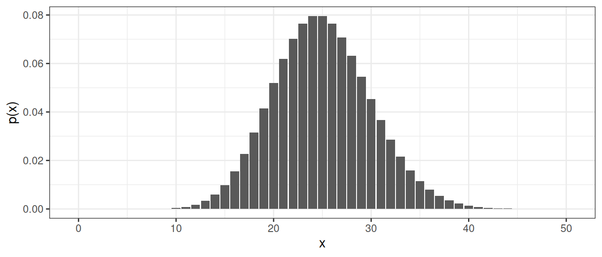
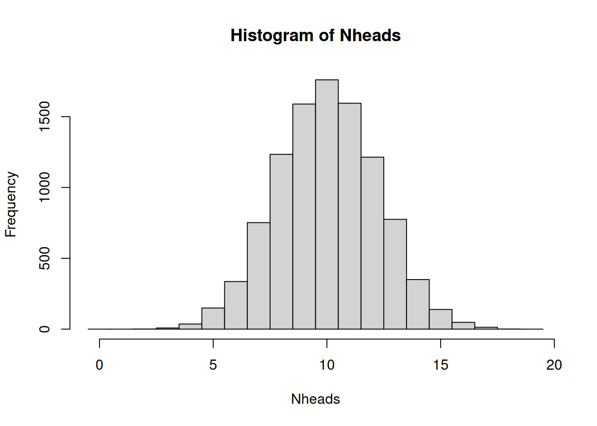
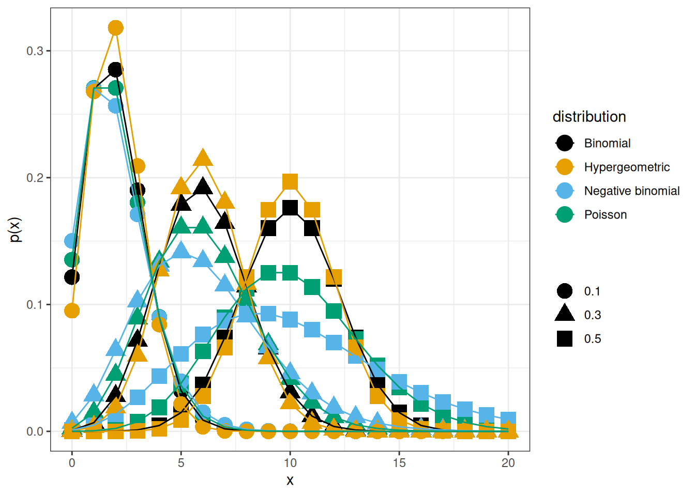

| x | p(x) |
|---|---|
| 1 | 0.17 |
| 2 | 0.17 |
| 3 | 0.17 |
| 4 | 0.17 |
| 5 | 0.17 |
| 6 | 0.17 |
2 Discrete random variables
A categorical random variable has nominal or ordinal outcomes such as {red, blue, green} or {tiny, small, average, large, huge}.
A discrete random variable usually represents a count and has a countable number of possible values, such as {1, 2, 3, 4, 5, 6}; {0, 2, 4, 6, 8} or all integers.
A discrete or categorical random variable can be described by its probability mass function (PMF).
The probability that the random variable \(X\) takes the value \(x\) is denoted \(P(X=x) = p(x)\). Note that:
- \(0 \leq p(x) \leq 1\), a probability is always between 0 and 1.
- \(\sum_x p(x) = 1\), the probabilities over all possible outcomes sum to 1.
Example 2.1 (The number of dots on a die) When rolling a die there are six possible outcomes: 1, 2, 3, 4, 5 and 6, each of which has the same probability, if the die is fair. The outcome of one die roll can be described by a random variable \(X\). The probability of a particular outcome \(x\) is denoted \(P(X=x)\) or \(p(x)\).
The probability mass function of a fair six-sided die can be summarized in a table;
or in a bar plot;

Example 2.2 (Nucleotide at a given site) The nucleotide at a given genomic site can be one of the four nucleotides: {A, C, T, G}. Unlike the sides on a die, the four nucleotides are usually not equally likely. The nucleotide at the site can be described by a random variable, \(X\). The probability mass function can be summarized in a table or a bar plot.
| x | p(x) |
|---|---|
| A | 0.4 |
| C | 0.2 |
| T | 0.1 |
| G | 0.3 |

Example 2.3 (CFU) The number of bacterial colony-forming units (CFU) on a plate is a random variable that can be described by a PMF such as the one shown in Figure 2.3.

The probability mass function can be used to compute the probability of an event. For example:
Getting an even number when rolling a fair six-sided die: sum up the probability for 2, 4, and 6: \[p(even)=p(2)+p(4)+p(6)=0.5.\]
Getting fewer than 15 CFUs on an agar plate: sum up the probabilities: \[P(X < 15) = \sum_{k=0}^{14} p(k) = 0.01.\]
The cumulative distribution function (CDF) is defined for discrete numeric random variables as \[F(x) = P(X<=x).\]
In words, \(F(x)\) is the probability that the random variable \(X\) takes a value less than or equal to \(x\). For the CFU example, the probability of getting fewer than 15 CFUs on an agar plate can be written as \(F(14) = P(X<=14) = P(X<15)\).
2.1 Expected value and variance
Two common properties of a probability distribution, such as a probability mass function, are the expected value and the variance.
The expected value is the average outcome of a random variable over many trials and is denoted \(E[X]\) or \(\mu\) and can be computed by summing up all possible outcome values weighted by their probability:
\[E[X] = \mu = \sum_{x \in S} x p(x),\] where \(S\) is the set of all possible outcomes.
For a uniform distribution, where every outcome has the same probability, the expected value can be computed as the sum of all outcome values divided by the total number of outcome values.
For a finite population in which every object is equally likely to be selected, the expected value can also be computed as the population mean, i.e., by summing over outcome values for all objects in the population;
\[E[X] = \mu = \frac{1}{N}\sum_{i=1}^N x_i,\] where \(N\) is the number of objects in the population.
The variance is a measure of spread defined as the expected value of the squared difference between the random variable and its expected value: \[var(X) = \sigma^2 = E[(X-E[X])^2] = \sum_{x \in S} (x-\mu)^2 p(x).\]
The variance can also be computed by summing over the outcome value for every object in the population: \[var(X) = \sigma^2 = \frac{1}{N}\sum_{i=1}^N (x_i-\mu)^2,\] where \(N\) is the number of objects in the population.
The standard deviation is the square root of the variance. The standard deviation of a random variable is usually denoted \(\sigma\). The standard deviation is always positive and on the same scale as the outcome values.
2.1.1 Linear transformations and combinations
The expected value and variance of combined or transformed random variables can often be computed using the following rules:
\[E(aX) = a E(X)\]
\[E(X + Y) = E(X) + E(Y)\]
\[E[aX + bY] = aE[X] + bE[Y],\] where \(a\) and \(b\) are constants.
\[var(aX) = a^2 var(X)\]
For independent random variables \(X\) and \(Y\):
\[var(aX + bY) = a^2var(X) + b^2var(Y).\]
2.2 Simulate distributions
Once a random variable’s probability distribution is known, probabilities, such as \(P(X=x), P(X<x)\) and \(P(X \geq x)\), and properties, such as expected value and variance, of the random variable can be computed. If the distribution is not known, simulation can be used to approximate these values.
Example 2.4 (Simulate coin toss) In a single coin toss, the probability of heads is 0.5. In 20 coin tosses, what is the probability of at least 15 heads?
The outcome of a single coin toss is a random variable, \(X\), with two possible outcomes \(\{H, T\}\). We know that \(P(X=H) = 0.5\). The random variable of interest is the number of heads in 20 coin tosses, \(Y\). The probability that we need to compute is \(P(Y \geq 15)\).

A single coin toss can be modelled by an urn with two balls. When a ball is drawn randomly from the urn, the probability to get the black ball (heads) is \(P(X=H) = 0.5\).
In R we can simulate random draws from an urn model using the function sample.
set.seed(260602)
## A single coin toss
sample(c("H", "T"), size=1)[1] "T"## Another coin toss
sample(c("H", "T"), size=1)[1] "T"Every time you run sample, a new coin toss is simulated.
If we want to simulate tossing 20 coins (or one coin 20 times), we can use the same urn model, provided that the ball is replaced after each draw.
The argument size tells the function how many balls we want to draw from the urn. To draw 20 balls from the urn, set size=20. Remember to replace the ball after each draw.
## 20 independent coin tosses
(coins <- sample(c("H", "T"), size=20, replace=TRUE)) [1] "T" "T" "T" "T" "H" "H" "T" "T" "H" "T" "T" "H" "T" "T" "H" "T" "T" "T" "H"
[20] "T"How many heads did we get in the 20 random draws?
## How many heads?
sum(coins == "H")[1] 6We can repeat this experiment (tossing 20 coins and counting the number of heads) several times to estimate the distribution of number of heads in 20 coin tosses.
To do the same thing several times, we use the function replicate.
To simulate tossing 20 coins and counting the number of heads 10000 times, do the following:
Nheads <- replicate(10000, {
coins <- sample(c("H", "T"), size=20, replace=TRUE)
sum(coins == "H")
})Plot the distribution of the number of heads in a histogram.
hist(Nheads, breaks=(0:20)-0.5)
Now, let’s get back to the question: when tossing 20 coins, what is the probability of at least 15 heads?
\(P(Y \geq 15)\)
Count how many times out of our 10000 experiments, the number of heads is 15 or greater.
sum(Nheads >= 15)[1] 201From this, we conclude that
\(P(Y \geq 15) =\) 201/10000 = 0.0201
Note that this is an approximation of the probability. The more times we repeat the experiment, the better our approximation will be. In fact, the number of heads in a series of independent coin tosses follows a binomial distribution, which is a discrete parametric distribution. We will get back to this later in the chapter.
Resampling can also be used to compute other properties of a random variable, such as its expected value.
The law of large numbers states that if the same experiment is performed many times, the average result will be close to the expected value.
The coin flip is a common example in statistics, but many situations with two outcomes can be modeled using similar models. If we consider the outcome of interest success (like heads in the coin example) and the alternative outcome failure, we can model, for example:
- Drug effect: A patient can respond to drug treatment (success) or not (failure)
- Side effect: After a treatment a patient might experience a side effect (success) or not (failure)
- Treatment or placebo: Randomly assign a study participant to the treatment or placebo group
- Antibiotic resistance: A bacterium is either resistant to an antibiotic or not
The probability of success and failure can be equal, like in the coin example, but they do not have to be. If the probability of a patient responding to a treatment is \(p=0.80\), then the probability of the patient not responding is \(1-p=0.20\). This can be modeled using an urn model with 4 black balls (cured) and 1 white ball (not cured).
2.3 Parametric discrete distributions
A discrete parametric distribution is a probability distribution described by a set of parameters. In many situations, data can be assumed to follow a parametric distribution.
2.3.1 Uniform
In a uniform distribution, every possible outcome has the same probability. With \(n\) different outcomes, the probability for each outcome is \(1/n\).
2.3.2 Bernoulli
A Bernoulli trial is a random experiment with two outcomes: success and failure. The probability of success, \(P(success) = p\), is constant. The probability of failure is \(P(failure) = 1-p\).
When coding, it is convenient to code success as 1 and failure as 0.
The outcome of a Bernoulli trial is a discrete random variable, \(X\).
\[P(X=x) = p(x) = \left\{ \begin{array}{ll} p & \mathrm{if}\,x=1\, \mathrm{success}\\ 1-p & \mathrm{if}\,x=0\, \mathrm{failure} \end{array} \right.\]
Using the definitions of expected value and variance it can be shown that:
\[E[X] = p\] \[var(X) = p(1-p)\]
A Bernoulli trial can be simulated, as seen in previous section, using the function sample.
2.3.3 Binomial
A Bernoulli trial describes a single success/failure experiment. A binomial random variable counts the number of successes in \(n\) such trials.
The number of successes in a series of Bernouilli trials is a random variable, \(X\), that follows the binomial distribution, if:
- The number of trials, \(n\), is fixed.
- Each trial is independent.
- The probability of success, \(p\), is the same for each trial.
\(X = \sum_{i=1}^n Z_i,\)
where all \(Z_i\) describe the outcome of independent and identical Bernoulli trials with probability \(p\) for success (\(P(Z_i=1) = p\)).
The probability mass function of \(X\) is called the binomial distribution. In short, we use the notation:
\[X \sim Bin(n, p)\]
The probability mass function is
\[P(X=k) = \binom{n}{k} p^k (1-p)^{n-k}\] It can be shown that
\[E[X] = np\] \[var(X) = np(1-p)\]
A binomial random variable is the number of successes when sampling \(n\) objects with replacement from an urn with objects of two types, of which the interesting type (success) has probability \(p\).
The probability mass function, \(P(X=k)\) can be computed using the R function dbinom and the cumulative distribution function \(P(X \leq k)\) can be computed using pbinom.
Examples of binomial random variables;
- The number of patients responding to a treatment out of \(n\) patients in a study, if the probability of a patient responding to treatment is \(p\).
- The number of patients experiencing a side effect out of \(n\) patients in a study, if the probability of a side effect is \(p\).
- the number of mutations in a gene of length \(n\), if the mutations are independent and identically distributed and the probability of a mutation at every single position is \(p\).
2.3.4 Poisson
The Poisson distribution is a discrete probability distribution that expresses the probability of a given number of events occurring in a fixed interval of time or space, given that these events occur with a known constant mean rate and independently of the time since the last event. It is commonly used for rare events.
A rare disease has a very low probability for a single individual. The number of individuals in a large population that catch the disease in a certain time period can be modelled using the Poisson distribution.
The probability mass function has a single parameter, \(\lambda\), the constant mean rate, and can be described as:
\[P(X=k) = \frac{\lambda^k}{k!}e^{-\lambda}.\]
The parameter \(\lambda\) is both the expected value and the variance of the distribution:
In the case where the Poisson distribution is used to approximate the binomial distribution, the expected value \(\lambda = n \pi\), where \(n\) is the number of objects sampled from the population and \(\pi\) is the probability of a single object being of the interesting type.
The variance is equal to the expected value:
\[var(X) = E[X] = \lambda = n \pi\]
The Poisson distribution can approximate the binomial distribution if \(n\) is large (\(n>20\)) and \(\pi\) is small (\(\pi<0.05\) and \(n\pi < 10\)).
Examples of Poisson random variables;
- A rare disease has a very low probability for a single individual. The number of individuals in a large population that catch the disease in a certain time period is a Poisson random variable.
- Number of reads aligned to a gene region
2.3.5 Negative binomial
A negative binomial distribution describes the number of failures that occur before a specified number of successes, \(r\), has occurred in a sequence of independent and identically distributed Bernoulli trials. \(r\) is also called the dispersion parameter.
In R: dnbinom, pnbinom, qnbinom
2.3.6 Geometric
The geometric distribution is a special case of the negative binomial distribution in which \(r=1\).
In R: dgeom, pgeom, qgeom
2.3.7 Hypergeometric distribution
The hypergeometric distribution occurs when sampling \(n\) objects without replacement from an urn with \(N\) objects of two types, of which there are \(K\) objects of the interesting type. The probability of selecting an object of the interesting type is \(p = K/N\).
The probability mass function
\[P(X=k) = \frac{\binom{K}{k}\binom{N-K}{n-k}}{\binom{N}{n}}\] can be computed in R using dhyper and the cumulative distribution function \(P(X \leq k)\) can be computed using phyper.
Examples of hypergeometric random variables:
- In a student group of 25 individuals, 10 are R beginners. If 5 individuals are randomly chosen to belong to group A, the number of R beginners in group A is a hypergeometric random variable.
- A drug company is producing 1000 pills per day, 5% have an amount of active substance below an acceptable threshold. In a random sample of 10 pills, how many contain too little active substance? The number of pills with too little active substance is a hypergeometric random variable.
- You investigate the differential expression of 10000 genes, 150 of these genes belong to the super interesting pathway XXX. You run a black-box algorithm that reports 80 differentially expressed (DE) genes. If the black-box algorithm chooses DE genes at random, the number of DE genes that belong to pathway XXX is a hypergeometric random variable.
2.3.8 Summary of discrete distributions
- Bernoulli: one success/failure trial
- Binomial: number of successes in \(n\) independent Bernoulli trials
- Poisson: number of events in a fixed interval
- Hypergeometric: number of successes in sampling without replacement
- Geometric: number of failures before the first success
- Negative binomial: number of failures before the \(r\)-th success
- Uniform: all outcomes equally likely
The binomial, hypergeometric, negative binomial and Poisson distributions have similarities. For large N (large population), the hypergeometric and binomial distributions are very similar. The Poisson distribution has equal mean and variance, whereas the binomial has a variance smaller than the mean, and the negative binomial has a variance greater than the mean.

In R, probability mass functions, \(P(X=x)\), for the binomial, hypergeometric, negative binomial and Poisson distributions can be computed using the functions dbinom, dhyper, dnbinom and dpois, respectively.
Cumulative distribution functions, \(P(X \leq x)\) can be computed using pbinom, phyper, pnbinom and ppois.
Also, functions for computing an \(x\) such that \(P(X \leq x) = q\), where \(q\) is a probability of interest, are available using qbinom, qhyper, qnbinom and qpois.